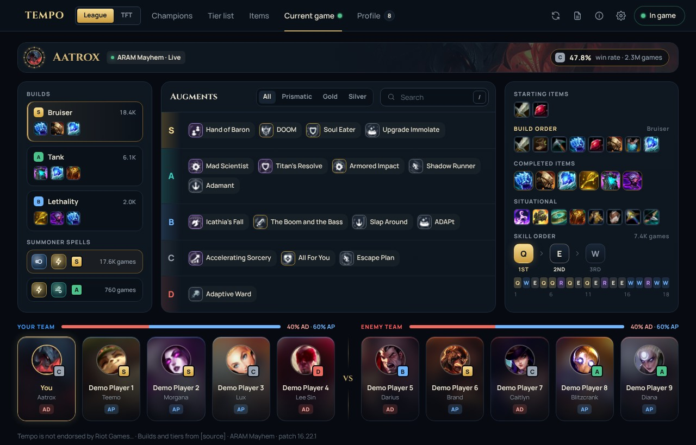
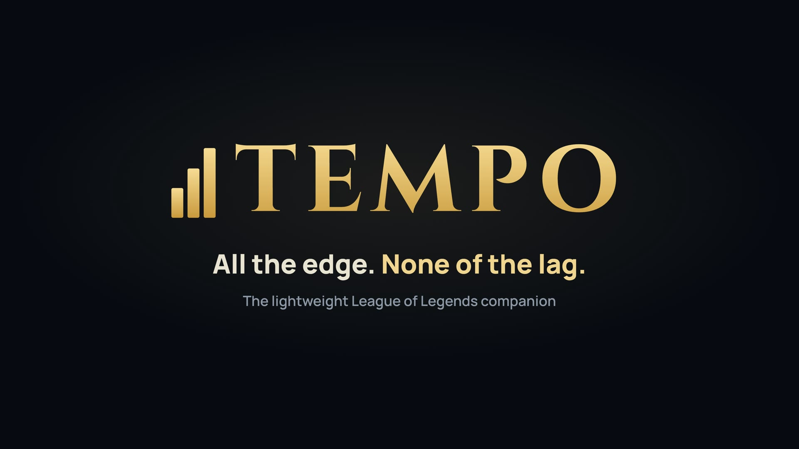
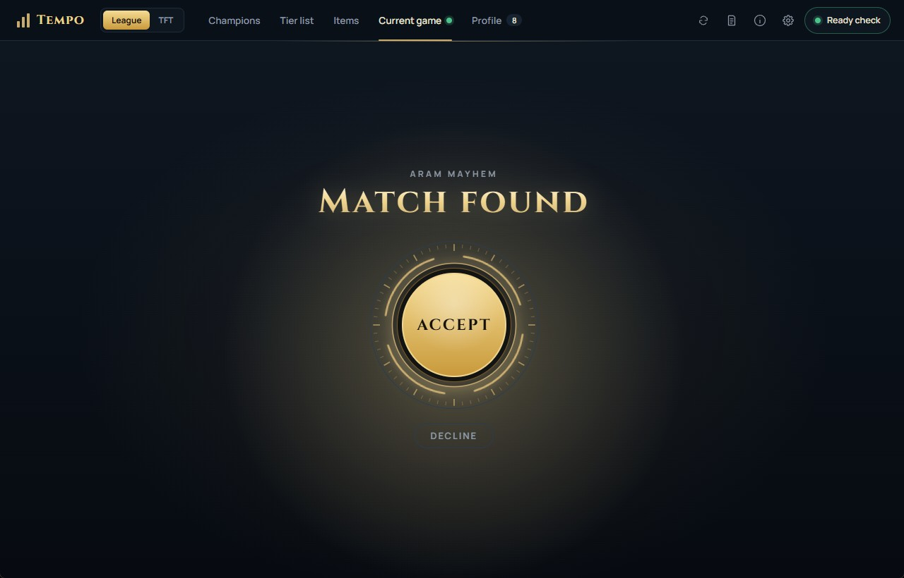
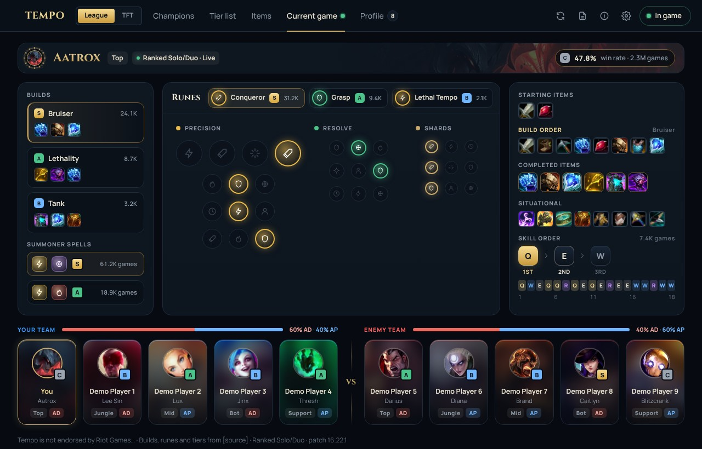
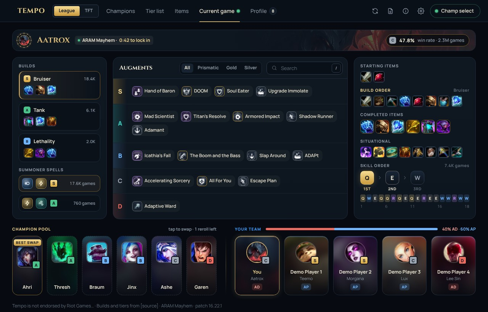
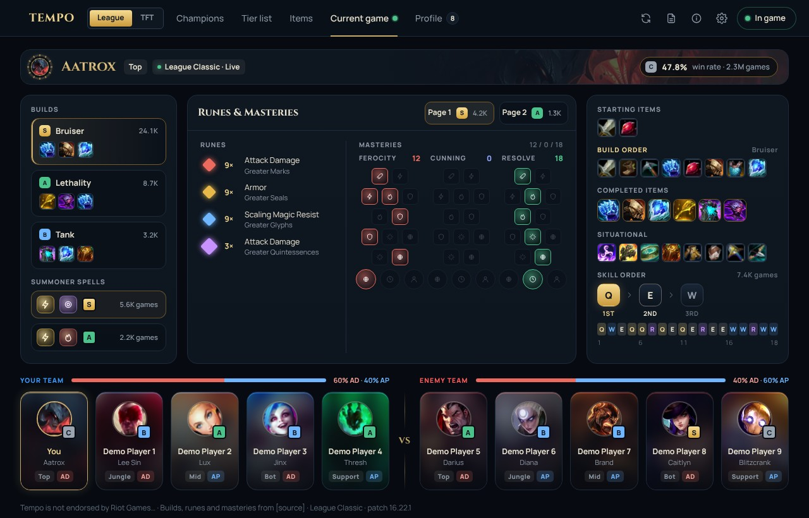
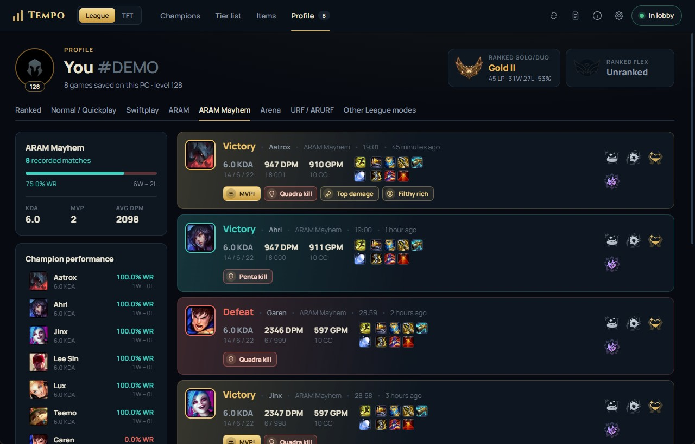

Every shop
Items for Summoner's Rift, ARAM, ARAM Mayhem and Arena, with tooltips that read like the client's.
BetaThe lightweight League of Legends companion
Champion references, Ranked and ARAM builds, Mayhem augment tiers and match history in a compact Windows app. Browse your options before a match and keep references nearby during the game.
2.4×less RAM in game8×faster startup settling25×less disk spaceMeasured in a real game against a popular companion app · see the testOn your phone? Open this page on your Windows PC to install.

Performance · why Tempo
Performance is the reason Tempo exists. We ran it beside a popular League companion app on the same PC, through the same game, and measured what each one costs. Tempo came out lighter on every number.
Less RAM in game, on average
Lower RAM peak in game
Faster startup settling, measured at 0.7 seconds
Less disk space once installed
How we measured. One PC: AMD Ryzen 7 5800X3D, NVIDIA GeForce GTX 1080 Ti, 32 GB, Windows 11. Tempo 0.6.0 and the other competitor app (version 3.0.24) were both open through the same 16-minute League game and sampled every 5 seconds, 190 samples each. RAM is the private working set of all of each app’s processes: the physical memory in Task Manager’s Memory column. Startup settling time is the median of 5 launches each, with the League client open: launch until the measured processes stay below 5% of one CPU core for a second. This is a CPU-settling heuristic, not a direct measurement of UI readiness. These results cover one PC and one game; FPS impact was not measured. Size on disk is each app’s install folder. The other competitor app is a widely used League companion app. Tested 15 and 16 Nov 2026.
Trailer
What we measured and what you get.

Trailer startup figures use the CPU-settling heuristic described above. Interface shots include design concepts; some shown features are planned.
Features
When the queue pops, Tempo shows the match on a full-screen ready check. Accept or decline right there, then watch the ring turn green while the others accept.

See both teams when League exposes them, with champion references and mode-specific data. Ranked shows builds, rune pages and lane matchups for your role; ARAM and Mayhem show ARAM build paths, spells, boots and skill orders; augment tiers use Mayhem data only.

See the bench with tiers and the best swap marked, your team's AD/AP split, and the build for whoever you lock in.

Items for Summoner's Rift, ARAM, ARAM Mayhem and Arena, with tooltips that read like the client's.
Every champion with abilities, base stats and lore, plus mode statistics where Tempo has them.
Games saved on this PC, your ranks, MVP and achievement badges, filtered by mode.
Every statistic shows its source and sample size. Where there is no data, Tempo says so instead of guessing.
Switch between League and Teamfight Tactics from the top bar.
See what changed in each version of Tempo, newest first.
Interface previews
These previews include proposed layouts and features. Ranked rune pages are in Tempo now; League Classic's old masteries shown in the concepts are not available yet.


Your data
What Tempo reads, where its numbers come from, and what never leaves your PC.
Tempo reads your own session through the League client's local API: the phase, champ select and your recent games. No memory reading, no automation, nothing that touches the game. It writes to the client only when you click Accept or Decline on a found match.
Ranked and ARAM builds, spells, boots, skill orders and rune pages come from Riot API match data that Tempo aggregates before each release. The app itself never calls the Riot API and ships with no API key.
Only totals per champion and build are published: game counts and win rates. Raw matches stay on the developer's machine, and no player names or IDs are ever published. In champ select, a hidden name stays hidden.
Your games and profile are saved on this computer only. Tempo has no account and no analytics. Besides League itself, it loads Riot's game images and checks GitHub for updates.
Download
Install Tempo, open the League client, and it picks up your next match on its own. It stays light the whole game.
Tempo is in beta: it's free and updates itself from inside the app, and some screens are still changing. Found a problem? Report it on GitHub.
Tempo runs on Windows. Open this page on your PC to install it.